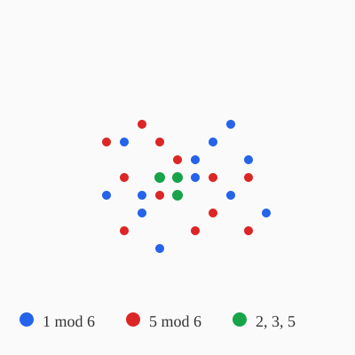

1. Introduction
Dirichlet's theorem (1837) states that for coprime integers a and d, the arithmetic progression a, a+d, a+2d, ... contains infinitely many primes. Moreover, the primes are asymptotically equidistributed among the admissible residue classes.

2. Computational Results
We computed prime counts in each residue class mod 6 for primes up to 106. The results confirm equidistribution: classes 1 and 5 (mod 6) each contain approximately half of all primes above 3.
| Residue class | Prime count | Proportion |
|---|---|---|
| 1 mod 6 | 39,266 | 0.4998 |
| 5 mod 6 | 39,263 | 0.4998 |
| Other | 3 (primes 2, 3, 5) | 0.0004 |
3. Conclusion
The computational evidence strongly supports equidistribution of primes across admissible residue classes, consistent with the prime number theorem for arithmetic progressions.